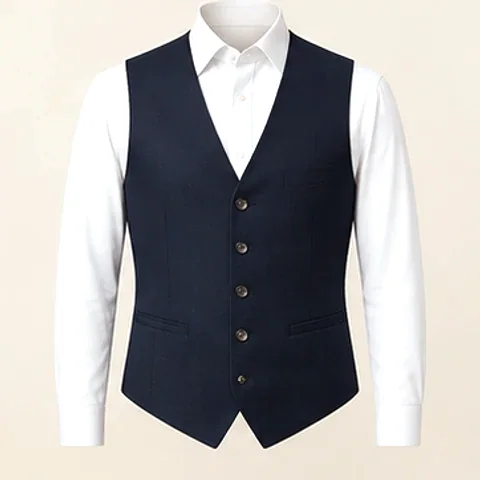

TISSUTHÈQUE
Choisissez votre tissu.
Les vraies photos du fournisseur, avec une référence unique pour votre composition.
Filtrer les étoffes
Aucun tissu ne correspond à ces filtres.
Photographies des étoffes du fournisseur. La teinte et l’échelle du motif sur le costume sont indicatives.
Essai libre · matières et couleurs simulées
La matière
Laine peignée
Un grain fin, un tombé net.
La couleur
Bleu marine
Le motif
Uni
Votre veste
Choisissez la fermeture, les revers, puis les détails de construction.
Votre pantalon
Choisissez les pinces, puis les poches et la ceinture. Chaque détail s’affiche en gros plan.
Avec ou sans gilet ?
Le gilet est facultatif. Activez-le pour composer un trois pièces.

LE TROIS PIÈCESLa touche finale.
Une silhouette structurée, un style à part entière.
Sans gilet : vous pouvez passer directement aux finitions.
Les finitions
Choisissez les boutons et la doublure, puis ajoutez votre broderie.
Vos inscriptions
Activez un ou plusieurs emplacements, puis écrivez votre texte. « Paul » est proposé pour visualiser chaque position. Le style et la couleur du fil se règlent pour chaque inscription.
LE GUIDE DES MESURES
Vos mesures
Portez une chemise légère et gardez le ruban horizontal, au contact du corps. Faites-vous aider pour le dos et les manches. Chaque champ est facultatif.
Votre composition
Relisez vos choix et téléchargez votre fiche pour le tailleur.
PERSONNALISATION
Chaque détail compte.
Options de personnalisation
Vos choix sont enregistrés dans votre composition. Le grand aperçu reste indicatif.
Aucune option ne correspond à cette recherche.
Ma fiche de configuration Deux pièces